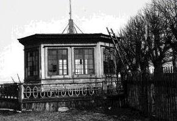
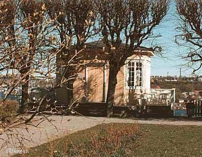
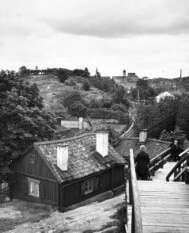
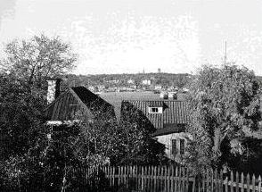
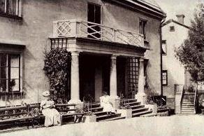
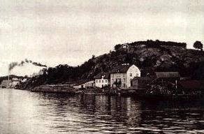

Lusthuset på Fåfängan. 1908


Trapporna från Åsöberget ner till Kvastmakaregatan. I bakgrunden Fåfängan.
|
|

Husen på Fåfängans östra sluttning från söder (Berghyddan). På andra sidan Saltsjön
syns Djurgården och Skansen.

Huvudbyggnaden, Patons malmgård, nedanför Fåfängan från sydväst. 1890-talet.

Huvudbyggnaden, Patons malmgård, nedanför Fåfängan från nordväst. 1890-talet.
|